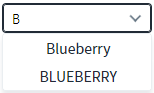
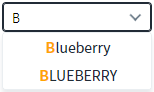
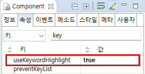

AutoComplete의 'useKeywordHighlight' 속성을 사용하여 검색어를 강조하는 예제입니다. 이 속성을 통해 사용자가 입력한 검색어의 강조 여부를 설정할 수 있습니다.
검색어 강조하지 않기(기본 설정)
검색어 강조하기
검색어를 "b" 또는 "B" 로 입력하여 출력된 목록의 검색어 강조를 비교합니다.
예제 영역 '검색어 강조 비활성화'에 구성된 AutoComplete의 입력 필드에 'B'를 입력합니다. 목록에 표시된 항목의 문자열에 검색어 'B'가 강조되지 않습니다.
Image 1.브라우저(Chrome) 실행 예시 - 검색어 강조 비활성화

예제 영역 '검색어 강조 활성화'에 구성된 AutoComplete의 입력 필드에 'B'를 입력합니다. 목록에 표시된 항목의 문자열에 검색어 'B'가 강조되어 글자색이 기본 문자열의 색과 다르게 표시됩니다.
Image 2.브라우저(Chrome) 실행 예시 - 검색어 강조함

컴포넌트의 속성을 정의합니다.
[필수] useKeywordHighlight="true"
(옵션 설명)
- false: [default] 검색 키워드를 강조하지 않습니다.
- true: 검색 키워드에 "w2autoComplete_keyword" class를 적용하여 강조합니다.
Image 3.웹스퀘어 스튜디오의 Component View 예시

Example 1.Source
<!-- autoComplete의 소스 본문 예시 --> <w2:autoComplete useKeywordHighlight="true" > <!-- 중략 --> </w2:autoComplete>
useKeywordHighlight